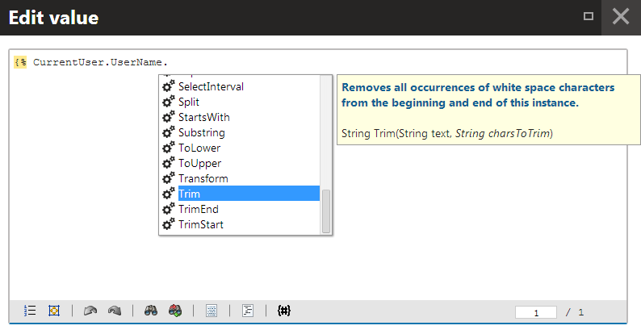
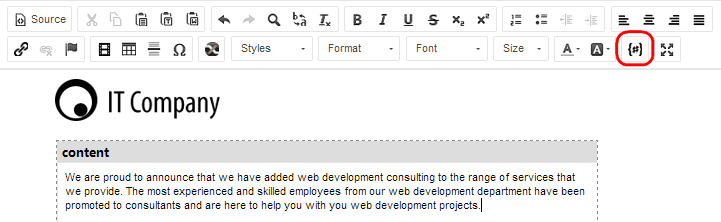
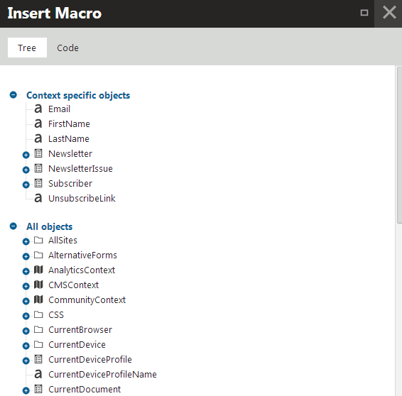
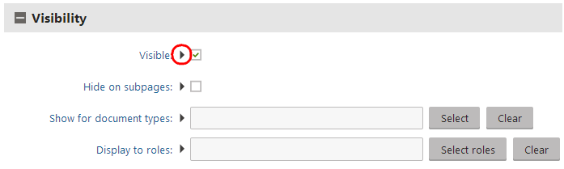
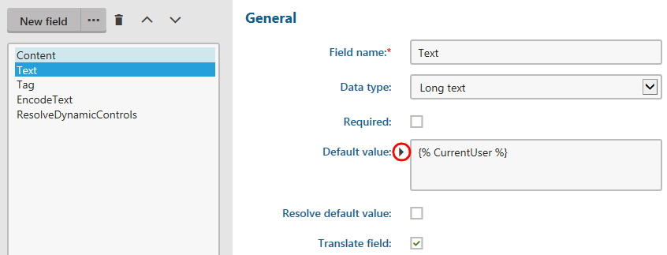

Entering macro expressions
The Kentico user interface provides several features that help you:
Build the macro expressions that you need
Enter macros into the system
Using the macro autocomplete help
When typing in dedicated macro editing fields, the system offers an autocomplete assistance feature. The autocomplete also works if you write macro expressions in other locations, for example when editing email templates, Text / XML transformations or HTML page layouts.
Note: Macro expressions are NOT supported in ASCX type transformations or page layouts.
The autocomplete is similar to IntelliSense in Visual Studio – as you type, a box with the available macro methods and fields appears next to the cursor. If you continue typing, the autocomplete filters the list to include only items that contain the given text. You can navigate through the listed macros using the up and down arrow keys or the mouse. Once you select the appropriate item, press the Enter, Space or Dot key to insert the macro into the text.
When accessing members of macro objects using the dot operator, the autocomplete shows a list of available methods and properties.
If you select a macro method in the autocomplete list, the help displays the method's description and signature (the return type and parameters). Italics identify method parameters that are optional.

Autocomplete showing members available for string objects (UserName), with details of the selected macro method
When creating macros within a specialized context, the autocomplete shows related macro fields in a high priority section. You can access prioritized macros at the top of the list, separated by a horizontal line.
Tip: To manually open the macro autocomplete, press Ctrl + Shift + Space.
Inserting macros into text and code fields
The system provides a shortcut for inserting macro expressions in the WYSIWYG editor, macro editors, and other types of code editors that support macros. For example, the feature is available for editable text regions of pages, or when editing email templates, newsletters or email campaigns.
Click Insert macro ( ) on the toolbar above or below the editing area.
) on the toolbar above or below the editing area.

Insert macro button on the WYSIWYG editor toolbar
The Insert Macro dialog opens. You can explore a tree of all available macro options. Click on an item in the tree to insert the given macro into the edited area.
If you wish to write the macro expression directly (with autocomplete support), switch to the Code tab, type the macro code and click Insert.

Tree containing the available macro options
The macro appears at the current position of the cursor in the edited area, enclosed within the {% %} macro parentheses.
Adding macro values into web part properties
You can use macros to insert dynamic values into the properties of web part instances. The system evaluates the macros when displaying the page containing the web part.
All web part properties support macro expressions. For properties with text values, type the required macros directly into the value. To assign macro values to other properties (such as checkboxes or lists of options), click the  icon next to the given property.
icon next to the given property.

Insert macro value button for properties in the web part configuration dialog
The Edit value dialog opens, where you can write the required macro.
For example, the {% CurrentUser.CheckPrivilegeLevel(UserPrivilegeLevelEnum.GlobalAdmin) %} macro returns a true or false value depending on if the current user has the Global administration privilege level. When you add the macro into the Visible property, only global administrators can see the web part's content on the live site.
Macro collisions in web part properties
When evaluating macro expressions in web part properties, the system resolves property field names into the corresponding values set for the given web part instance. For example, {% WebPartTitle %} resolves into the value of the WebPartTitle property.
This feature can lead to collisions with general macro expressions. For example, if a web part has a property with the field name CurrentUser, the system cannot correctly resolve macros such as {% CurrentUser.Username %} inside the web part's properties.
Note
By default, the WhereCondition, OrderBy and Columns properties of web parts are secured against SQL injection attacks. If you insert a macro that returns a string value into the property, the system escapes single quote characters ('), and replaces them with two single quotes (''). This may lead to SQL syntax errors.
Use the handlesqlinjection macro parameter to control single quote escaping in macro results. See Macros and security - SQL injections for more information.
Delaying the resolving of web part macros
If you use web parts to display data retrieved by macros, you may encounter problems with the data not updating correctly (for example after a postback that affects the displayed data).
To work around such issues, you can set macro expressions to use the WebPartRender macro resolver, which evaluates macros during the web part's render event instead of earlier in the page life cycle. Append the |(resolver)WebPartRender parameter to the macro expression. For example:
{% ECommerceContext.CurrentShoppingCart.TotalUnits|(resolver)WebPartRender %}
Note: The WebPartRender resolver is only intended for macros that directly display data on the page. You CANNOT use delayed resolving for dynamic conditions that the system needs to process before rendering starts, for example macros in the Visible property of web parts.
Setting default form field values through macros
When defining form fields through the field editor, you can use macros to set dynamic default values (for both visible and hidden form fields).
Click Edit value (
) next to the Default value and write the macro in the Edit value dialog:
If the field is visible in the editing form, the system resolves the macro directly when users open the form.
If the field is hidden, the macro is resolved when the form is submitted.

Adding macros into default form field values
If you place the macro directly into the Default value of text-based fields, the macro appears unresolved in the field when users view the resulting form.
Note
When editing fields for web part properties, form control parameters, or the properties of UI page templates, the resolving of macros added into default field values via the Edit value (
) dialog depends on the Resolve default value flag.
Using macros as default values for web part properties
Setting default values for web part properties is a common example of the macro functionality in form fields.
Open the Web parts application.
Use the tree to select the web part for which you want to set the default property value.
Open the Properties tab.
Select the required property and enter the macro into the Default value.
Click Save.
The system resolves the macro depending on how you entered the expression into the default value:
If you placed the macro directly into the default value of a text property or have the Resolve default value check box disabled, the expression remains unresolved in the configuration dialog when users add new instances of the web part. The system resolves the macro when displaying the page containing the web part instance (as long as the user leaves the expression in the property's value).
If you added the macro through the Edit value (
) dialog and enable Resolve default value, the system resolves the macro directly when opening the web part properties dialog.